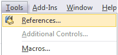
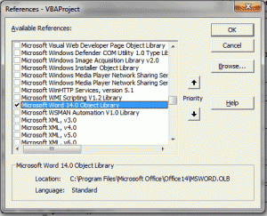
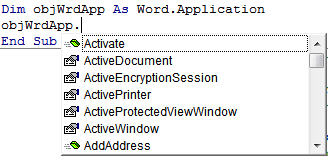

Tips_Macro_OpenWord.xls (49,5 KiB, 2 804 скачиваний)
Tips_Macro_OpenWord.xls (49,5 KiB, 2 804 скачиваний)Как из Excel обратиться к другому приложению
Иногда бывает необходимо перенести что-то из Excel в другое приложение. Я возьму для примера Word. Например скопировать ячейки и вставить. Обычно мы это так и делаем - скопировали в Excel, открыли Word - вставили. Но сделать это при помощи кода чуть сложнее, хотя если разобраться никаких сложностей нет. Ниже приведен пример кода, который открывает Word, открывает в нем определенный документ, копирует данные из Excel и вставляет в открытый документ Word.
Sub OpenWord() Dim objWrdApp As Object, objWrdDoc As Object 'создаем новое приложение Word Set objWrdApp = CreateObject("Word.Application") 'Можно так же сделать приложение Word видимым. По умолчанию открывается в скрытом режиме 'objWrdApp.Visible = True 'открываем документ Word - документ "Doc1.doc" должен существовать Set objWrdDoc = objWrdApp.Documents.Open("C:\Doc1.doc") 'Копируем из Excel диапазон "A1:A10" Range("A1:A10").Copy 'вставляем скопированные ячейки в Word - в начала документа objWrdDoc.Range(0).Paste 'закрываем документ Word с сохранением objWrdDoc.Close True ' False - без сохранения 'закрываем приложение Word - обязательно! objWrdApp.Quit 'очищаем переменные Word - обязательно! Set objWrdDoc = Nothing: Set objWrdApp = Nothing End Sub
Скачать пример:
Tips_Macro_OpenWord.xls (49,5 KiB, 2 804 скачиваний)
В файле-примере, приложенном к данной статье, в комментариях к коду есть несколько добавлений. Например, как вставить текст из ячеек в определенные закладки Word-а и как добавить новый документ, а не открывать уже имеющийся. Так же так есть код проверки - открыто ли приложение Word в данный момент. Порой это тоже может пригодиться, чтобы работать с запущенным приложением Word, а не создавать новое:
Sub Check_OpenWord() Dim objWrdApp As Object On Error Resume Next 'пытаемся подключится к объекту Word Set objWrdApp = GetObject(, "Word.Application") If objWrdApp Is Nothing Then 'если приложение закрыто - создаем новый экземпляр Set objWrdApp = CreateObject("Word.Application") 'делаем приложение видимым. По умолчанию открывается в скрытом режиме objWrdApp.Visible = True Else 'приложение открыто - выдаем сообщение MsgBox "Приложение Word уже открыто", vbInformation, "Check_OpenWord" End If End Sub
В принципе, активировать или вызвать(если закрыто) другое приложение Офиса можно одной строкой:
Sub Open_AnotherApp() Application.ActivateMicrosoftApp xlMicrosoftWord End Sub
|
1 2 3 |
но данный метод может пригодиться только в том случае, если Вам необходимо действительно лишь активировать другое приложение, но дальше обращаться к этому приложению Вы уже не сможете.
По сути, методами CreateObject и GetObject можно обратиться к любому стороннему приложению(например Internet Explorer). Куда важнее при обращении к этим объектам знать объектную модель того приложения, к которому обращаетесь. Чтобы увидеть свойства и методы объектной модели приложения, можно в редакторе VBA подключить необходимую библиотеку, объявить переменную, назначив ей тип приложения. Покажу на примере того же Word-а.
Для начала открываем меню Tools-References:

Подключаем библиотеку:

Затем объявляем переменную и присваиваем ей тип нужного приложения:
Sub OpenWord() Dim objWrdApp As Word.Application Set objWrdApp = New Word.Application objWrdApp.Visible = True End Sub
|
1 2 3 4 5 |
Dim objWrdApp As Word.Application |
Если теперь в редакторе, внутри этой процедуры в любом месте ниже объявления переменной набрать objWrdApp и точку, то сразу после ввода точки выпадет меню, в котором будут перечислены все доступные методы и свойства этого приложения.

Так же можно нажать F2 и через поиск найти Word и просмотреть все методы и свойства данного приложения.
Метод установки ссылки на библиотеку приложения через Tools-References называют еще ранним связыванием. Подобный метод позволяет создать ссылку на приложение быстрее и, как описано выше, предоставляет разработчику доступ к визуальному отображению свойств и методов объекта. Но есть существенный минус: если в своем коде Вы установите ссылку на Word 12 Object Libbary(Word 2007), то на ПК с установленным Word 2003 получите ошибку MISSING, т.к. Word 2003 относится к библиотеке Word 11 Object Libbary. Подробнее можно прочитать в статье Ошибка — Cant find project or library.
Метод же CreateObject еще называется методом позднего связывания. Применяя его не возникнет проблем с MISSING, очень часто возникающих при раннем связывании. Поэтому я рекомендовал бы при разработке использовать раннее связывание для удобства использования свойств и методов(если Вы их не знаете), а перед распространением приложения к коде заменить все именованные константы(типа wdLine) на числовые константы(для wdLine это 5) и применить позднее связывание. Посмотреть числовое значение константы можно просто записав её в коде, начать выполнение кода через F8 и навести курсор мыши на эту константу. Всплывающая подсказка покажет числовое значение. А заменять эти константы их числовыми значениями в случае с поздним связыванием необходимо, т.к. Excel не знает их значений.
Попробую пояснить этот момент поподробнее: при подключении библиотеки Wordа(Word 12 Object Libbary) мы так же подключаем и все свойства, методы и константы, которые доступны из Wordа. И их использование напрямую становится доступно из Excel и мы можем смело написать что-то вроде wbLine и Excel поймет эту константу. При позднем же связывании мы уже не подключаем библиотеки Word(во избежание ошибок совместимости) и как следствие - методы, свойства и константы Wordа для Excel становятся чем-то неизвестным и не документированным и мы получим ошибку "Variable not defined"(если включена директива Option Explicit) при попытке назначить свойство через wdLine. Если же Option Explicit не включена - то хоть ошибки не будет, но и код будет работать неверно, т.к. для неизвестной для Excel переменной wbLine будет назначено значение 0(Empty). Поэтому и надо все константы другого приложения заменять их числовыми значениями.
Главная ошибка новичка
И хочу так же упомянуть про ошибку, которую очень часто совершают при обращении к одному приложению из другого. Допустим, необходимо скопировать из Word все данные в Excel. Часто начинающие делают это так:
Sub OpenWord() Dim objWrdApp As Object, objWrdDoc As Object 'создаем новое приложение Word Set objWrdApp = CreateObject("Word.Application") 'Можно так же сделать приложение Word видимым. По умолчанию открывается в скрытом режиме 'objWrdApp.Visible = True 'открываем документ Word - документ "Doc1.doc" должен существовать Set objWrdDoc = objWrdApp.Documents.Open("C:\Doc1.doc") 'Копируем из Word все данные, обращаясь к объекту Range документа Range.Copy 'вставляем скопированное в ячейку А1 активного листа Excel ActiveSheet.Paste 'закрываем документ Word без сохранения objWrdDoc.Close False 'закрываем приложение Word objWrdApp.Quit 'очищаем переменные Word - обязательно! Set objWrdDoc = Nothing: Set objWrdApp = Nothing End Sub
На строке Range.Copy обязательно получите ошибку от VBA, указывающую, что нужен аргумент для объекта. Можно попробовать добавить этот аргумент: Range(1).Copy. Но все равно получим ошибку. Можно, конечно, указать даже ячейки: Range("A1").Copy. Но это приведет к тому, что скопирована будет ячейка А1 активного листа Excel.
Все дело в том, что мы хотим скопировать данные из Word-а, выполняя при этом код из Excel. А у Excel тоже есть объект Range с другими аргументами. И если не указать какому приложению, листу или документу принадлежит Range, то по умолчанию он будет отнесен к тому приложению, из которого выполняется код. Т.е. к Excel. Если совсем кратко об этом - всегда надо указывать какому приложению или объекту принадлежит используемый объект или свойство. Правильно код должен выглядеть так:
Sub OpenWord() Dim objWrdApp As Object, objWrdDoc As Object 'создаем новое приложение Word Set objWrdApp = CreateObject("Word.Application") 'Можно так же сделать приложение Word видимым. По умолчанию открывается в скрытом режиме 'objWrdApp.Visible = True 'открываем документ Word - документ "Doc1.doc" должен существовать Set objWrdDoc = objWrdApp.Documents.Open("C:\Doc1.doc") 'Копируем из Word все данные, обращаясь к объекту Range документа 'при этом перед Range явно указываем откуда его брать - из документа Word -objWrdDoc("C:\Doc1.doc") objWrdDoc.Range.Copy 'вставляем скопированное из Word в активную ячейку активного листа Excel ActiveSheet.Paste 'закрываем документ Word без сохранения objWrdDoc.Close False 'закрываем приложение Word objWrdApp.Quit 'очищаем переменные Word - обязательно! Set objWrdDoc = Nothing: Set objWrdApp = Nothing End Sub
Вместо Range ту же ошибку делают и с Selection(потому что Selection часто присутствует в записанных макрорекордером макросах), т.к. этот объект есть и в Excel и в Word и без явного указания приложения будет относится к приложению, в котором записано.
В приложенном файле код немного отличается от представленных выше - в нем можно посмотреть как вставить текст из ячеек в определенные(созданные заранее) закладки Word-а. Это удобно для создания бланков в Word и заполнения их через Excel
Скачать пример:
Tips_Macro_OpenWord.xls (49,5 KiB, 2 804 скачиваний)
Примеры работы с тем же Outlook можно посмотреть в моих статьях:
Как отправить письмо из Excel?
Сохранить вложения из Outlook в указанную папку